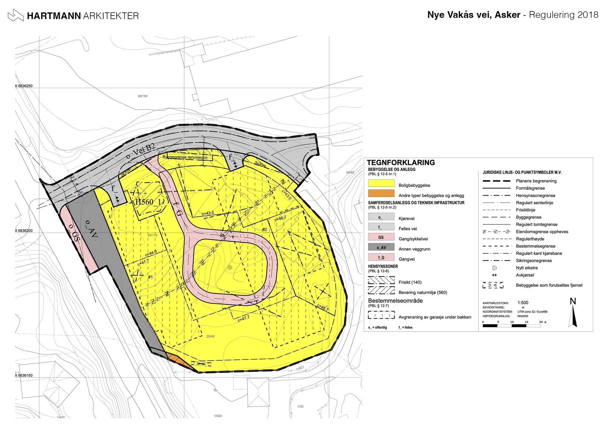

For deg som skal bo.
En bolig begynner med din hverdag. Planløsningen, forholdet til hagen og rommenes fleksibilitet må møte behovene dine.
Arkitektur, interiør og planarbeid. Vi hjelper deg med å finne en retning og gjøre den konkret.
Fra den første eneboligen til større boligprosjekter. Vi arbeider med nybygg, tilbygg, hytter og leiligheter, tilpasset tomten og menneskene som skal bo der.
Se boligprosjekterArbeidsplasser og fellesrom skal fungere for mange. Porteføljen omfatter blant annet kontorer, skoler, brannstasjon og kundesenter.
Se næringsprosjekterGod utvikling begynner med å forstå stedet. Vi arbeider med arealbruk, bebyggelse og uteområder i dialog med oppdragsgiver og relevante fag.
Se planarbeidEksisterende bygg kan få nye roller. Vi utforsker ombygging av låver til boligformål og andre muligheter for å ta vare på og utvikle det som allerede finnes.
Utforsk transformasjonPlanløsning, materialer og innredning former hverdagen inne i bygget. Arkitektur og interiør sees i sammenheng fra tidlige skisser til gjennomarbeidede detaljer.
Se et interiørprosjektVi bruker BIM og 3D i prosjekteringen, og samarbeider med rådgivere, landskapsarkitekter, utbyggere og entreprenører.
Snakk med oss om ditt prosjekt
En bolig begynner med din hverdag. Planløsningen, forholdet til hagen og rommenes fleksibilitet må møte behovene dine.
I større prosjekter må tomteutnyttelse, regulering og mange fag sees i sammenheng. Vi arbeider med både småhus, leilighetsbygg og næring.
Arkitekttegninger, illustrasjoner og byggetegninger gir prosjektet et tydelig grunnlag. Vi bistår også med byggesøknader og planarbeid.
Vi samarbeider med bygg- og VVS-rådgivere, landskapsarkitekter, utbyggere og entreprenører. Rollen tilpasses prosjektets størrelse og kompleksitet.
Et nytt hjem, et bygg som skal fornyes,
eller et område med muligheter?